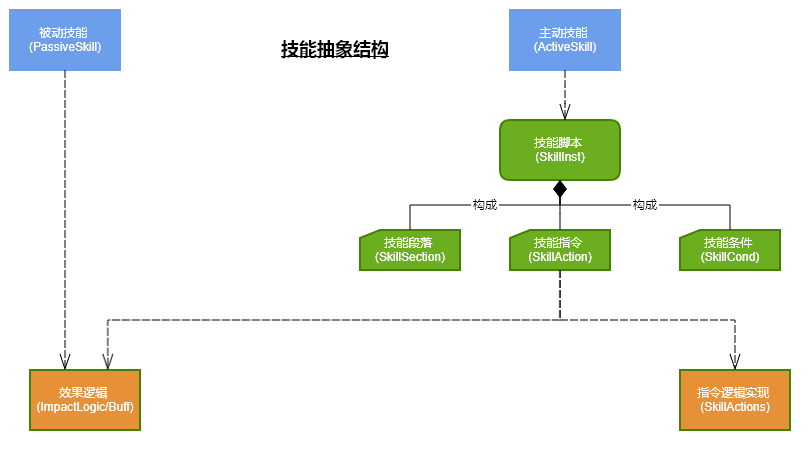
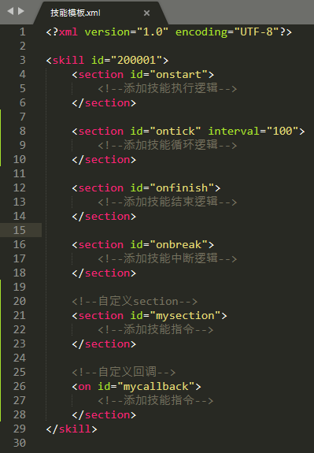

《技能设计》参考手册
编辑历史：
| Editor | Content | Remark | Date |
李小江 | 提交初始版本，定义手册结构 | 使用EverNote编辑，导出为Html文件 | 2019.10.28 |
0.内容概述：
- 技能抽象结构
- 技能技术实现
- 编写技能脚本
- 技能脚本的元素
- 扩展和限制
- 未来规划
1.技能抽象结构
在经典技能设计的基础上，增加可自由配置的技能脚本（SkillInst），具体表现为：
1.技能本身划分为主动技能（ActiveSkill）和被动技能（PassiveSkill），Buff/Debuff可由效果逻辑(ImpactLogic)来实现；
2.技能脚本（SkillInst）用于扩展主动技能，由技能段落（SkillSection）、技能指令（SkillAction）和技能条件（SkillCond）组成，保存为XML结构；
3.提供一系列技能指令（SkillAction），内部实现其具体行为，也可调用效果逻辑；
4.效果逻辑原则是原子级别的行为，有4种常规类型（瞬发、强控、弱控、属性），另也用于实现Buff/Debuff（提供持续时间、间隔触发和范围选择的功能）；

为满足项目策划设计需要，此抽象结构提供3处主要的横向扩展，分别是：
1.横向扩展技能逻辑，如瞬发技能、吟唱技能、陷阱技能、被动技能、纯动作技能等；
2.横向扩展效果逻辑，如瞬发相关（伤害、治疗）、强控相关（定身、击退）、弱控相关（隐式、瞬移）、属性相关（暴击修正、伤害反射）等；
3.横向扩展技能指令和技能条件，如等；
由SkillInst.txt和SkillSpec.xml提供配置，可参考【svn://10.17.5.13/export3T/ProjectA/Doc/策划文档/4战斗设计/Skill技能指令说明.xml】；
2.技能技术实现
3.组织技能脚本
3.1 技能脚本的框架
技能脚本存储为XML格式，可通过技能编辑器编写（推荐），也可直接通过文本编辑器书写（如Sublime/Notepad++）。
最简的脚本格式如下图，在skill下定义多个section，供设计人员填入具体行为逻辑。

也可在技能编辑器（SkillEditor）中可视化编辑，如图所示：

3.2 组织脚本逻辑
3.2.1.定义时间延迟
脚本按指令定义先后顺序执行，除逻辑控制指令(if/select/loop/wait)外，所有指令都是瞬间完成，无执行时间；
可基于wait指令定义时间延迟，采用相对等待时间而不是绝对时间，如下所示（表示此处等待834ms）：
<action id="wait" time="834"/>
也可在技能编辑器（SkillEditor）中可视化编辑，如图所示：
3.2.2.编写逻辑控制语句
有4种逻辑控制结构，分别是
1) if语句
<cond time="0" id="hasimpact">
<action time="100" id="wait"/>
<action cameraid="1000" time="0" id="shakecamera"/>
</cond>
也可在技能编辑器（SkillEditor）中可视化编辑，如图所示：

2) select语句
<action time="0" id="select">
<action time="0" id="if">
<cond time="0" id="hasimpact"/>
<action cameraid="1000" time="0" id="shakecamera"/>
</action>
<action time="0" id="if">
<action cameraid="1500" time="0" id="shakecamera"/>
</action>
</action>
也可在技能编辑器（SkillEditor）中可视化编辑，如图所示：

3) loop语句
<action max="2" time="0" id="loop">
<action cameraid="1500" time="0" id="shakecamera"/>
</action>
也可在技能编辑器（SkillEditor）中可视化编辑，如图所示：

4) gotosection语句
<action time="0" sectionid="#mysection" id="gotosection"/>
也可在技能编辑器（SkillEditor）中可视化编辑，如图所示：

3.2.3.使用动态参数
动态参数数据存储在SkillInst.txt中，预先分配20个，只能存储整型数据，用于分离技能脚本中的数据，使得技能脚本逻辑可复用。
通过技能编辑器（SkillEditor）中可视化编辑，在节点参数中选择占用的动态参数序号。

特别注意：每个逻辑参数列只能填入一个节点参数数据
3.2 配置技能脚本
SkillEx.txt：配置技能数据，利用SkillInst列关联SkillInst.txt；
SkillInst.txt：配置技能脚本数据，利用LogicFile列关联脚本文件（逻辑部分），利用LogicParam列配置脚本数据（数据部分）；
4.技能脚本指令
除前面介绍的控制指令外，还有2种指令：
4.1 事件指令：用于发送逻辑事件
指令分类 | 指令s |
表现相关action | playanim/ stopanim/ playeffect/ playchaineffect/ setrangeeffect/ stopeffect/ playsound/ shakecamera/ sendnotice/ showmodel |
位置/朝向相关action | movetopos/ telemoveto/ stopmove/ setposto/ setfaceto/ savepos |
目标扫描相关action | scancircle/ scansector/ scanray/ scanring/ scanteam/ scanenemy/ clearscan |
角色相关action | selectobj/ createnpc/ destroynpc |
效果Impact相关action | addimpact/ removeimpact/ updateimpact |
4.2 条件指令：用于提供判断条件
条件指令 | 描述 |
hasimpact | 是否拥有impact |
hasstate | 是否在impact状态下 |
hastarget | 是否有目标 |
5.扩展和限制
以下功能视实际使用效果可考虑加入：
1.用列表方式显示逻辑参数列表，可直观看到各个逻辑参数对应的实际数据含义；
2.定义飞行物，提供飞行物的轨迹配置参数；
以下功能受设计限制，需要在使用层面规避：
to be continued...
6.未来规划
to be continued...